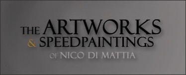
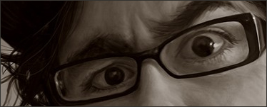
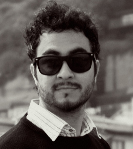

BIO
 Nico Di Mattia was born in Cordoba, Argentina.
Ever since he was a child, he was attracted to the arts, comic books, animation and narration.
In 1998, at the age of 15, he independently published his first comic book.
In 2001, he entered the Cinema and TV School at Cordoba´s National University.
While studying there, he acted as a script writer, director and postproducer for various short films, most of which emphasized his skills with aesthetic experimentation.
It was during his first year at Cordoba´s National University that Nico made his very first “speedpainting”.
It was a painting of the poster from “Planet of the Apes“, created on his bedroom wall with acrylics.
This process, which he recorded on VHS, was accelerated and musicalized, resulting in a performance that he called “Arte Fusion”.
On 2002 he made his first animated short film, and it was selected to be part of the International Animation Festival “Anima 03”.
On 2005 he graduated as a Technician Producer In Audiovisual Media and he directed the short fantasy film “La liga de los Imperfectos”,
which took part and was awarded in various National and International Film Festivals. He also directed two new animated short films between 2007 and 2008,
which are participating of different national and international film festivals.
In 2007 Nico received worldwide attention with his performances of “digital speed paintings” posted on his YouTube´s channel,
which has thousands of subscribers and more than 80 million of views.
He currently works as a freelance illustrator and caricaturist for different business, companies and private clients from all over world.